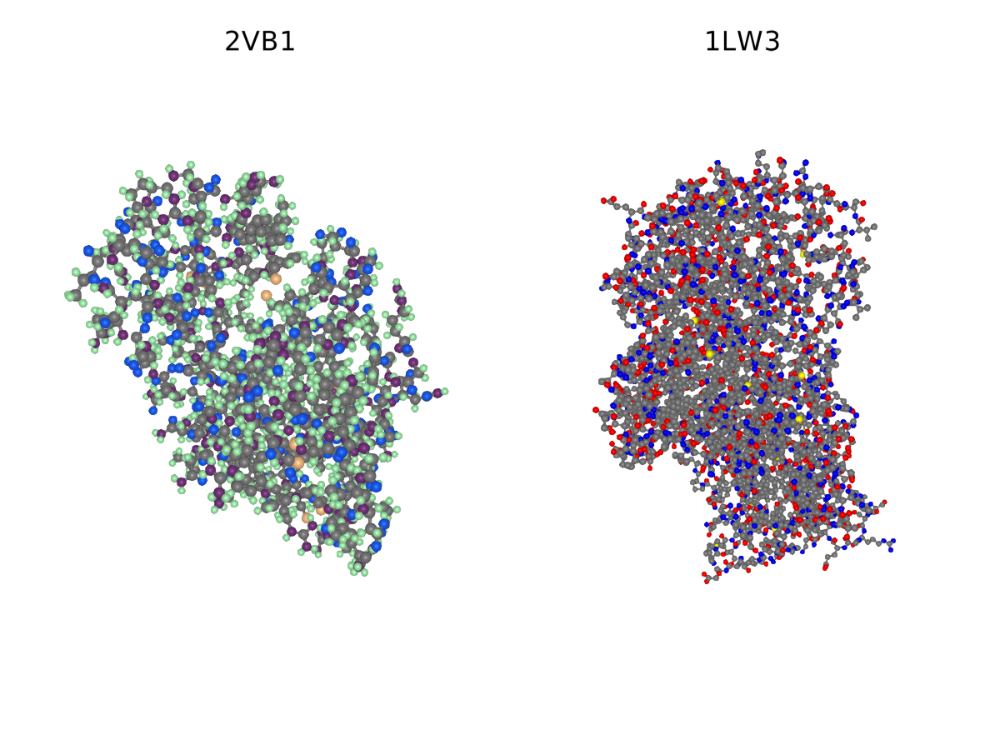

BioMakie
User interface tools for bioinformatics.
Description
BioMakie.jl is a package designed to facilitate visual investigation of biological data. BioMakie utilizes objects from packages in the BioJulia ecosystem like BioStructures.jl, and outside packages like MIToS.jl to load data and to do most of the setup.
For more examples of what Makie can do, visit the documentation at https://makie.juliaplots.org/stable/
Setup
using Pkg
Pkg.add("BioMakie")
# import the package
using BioMakie Resolving package versions...
Installed Hyperscript ─────────────── v0.0.3
Installed CairoMakie ──────────────── v0.3.4
Installed Distances ───────────────── v0.9.2
Installed WGLMakie ────────────────── v0.2.6
Installed JSServe ─────────────────── v0.6.13
Installed Distributions ───────────── v0.23.8
Installed NLSolversBase ───────────── v7.5.0
Installed PDMats ──────────────────── v0.10.1
Installed GeometryBasics ──────────── v0.2.15
Installed GLM ─────────────────────── v1.4.0
Installed IdentityRanges ──────────── v0.3.1
Installed StatsMakie ──────────────── v0.2.3
Installed CoordinateTransformations ─ v0.6.1
Installed SpecialFunctions ────────── v0.10.3
Installed RecursiveArrayTools ─────── v2.11.0
Installed ForwardDiff ─────────────── v0.10.16
Installed AbstractPlotting ────────── v0.11.2
Installed PositiveFactorizations ──── v0.2.4
Installed FillArrays ──────────────── v0.8.14
Installed FFMPEG ──────────────────── v0.3.0
Installed Lazy ────────────────────── v0.15.1
Installed ShiftedArrays ───────────── v1.0.0
Installed AbstractTrees ───────────── v0.3.4
Installed DiffRules ───────────────── v1.0.2
Installed Rotations ───────────────── v1.0.2
Installed Makie ───────────────────── v0.11.0
Installed GridLayoutBase ──────────── v0.3.7
Installed ImageIO ─────────────────── v0.2.0
Installed JLD2 ────────────────────── v0.1.14
Installed GLMakie ─────────────────── v0.1.5
Installed MakieLayout ─────────────── v0.9.10
Installed Optim ───────────────────── v0.22.0
Installed DiffResults ─────────────── v1.0.3
Installed StatsModels ─────────────── v0.6.21
Installed KernelDensity ───────────── v0.5.1
Installed EllipsisNotation ────────── v1.0.0
Installed MeshIO ──────────────────── v0.4.0
Installed PNGFiles ────────────────── v0.2.1
Installed Interpolations ──────────── v0.12.10
Installed DiffEqDiffTools ─────────── v1.7.0
Installed Loess ───────────────────── v0.5.3
Installed LineSearches ────────────── v7.1.1
Installed ArrayInterface ──────────── v2.14.17
Installed ImageTransformations ────── v0.8.9
Installed Calculus ────────────────── v0.5.1
Installed BioMakie ────────────────── v0.1.0
Updating `~/work/BioMakie.jl/BioMakie.jl/docs/Project.toml`
[537997a7] ↓ AbstractPlotting v0.15.23 ⇒ v0.11.2
[7de43156] ~ BioMakie v0.1.1 `~/work/BioMakie.jl/BioMakie.jl` ⇒ v0.1.0
[13f3f980] ↓ CairoMakie v0.3.17 ⇒ v0.3.4
[b4f34e82] ↓ Distances v0.10.2 ⇒ v0.9.2
[31c24e10] ↓ Distributions v0.24.15 ⇒ v0.23.8
[e9467ef8] ↓ GLMakie v0.1.28 ⇒ v0.1.5
[5c1252a2] ↓ GeometryBasics v0.3.10 ⇒ v0.2.15
[47d2ed2b] ↓ Hyperscript v0.0.4 ⇒ v0.0.3
[824d6782] ↓ JSServe v1.2.0 ⇒ v0.6.13
[276b4fcb] ↓ WGLMakie v0.3.3 ⇒ v0.2.6
Updating `~/work/BioMakie.jl/BioMakie.jl/docs/Manifest.toml`
[537997a7] ↓ AbstractPlotting v0.15.23 ⇒ v0.11.2
[1520ce14] + AbstractTrees v0.3.4
[4fba245c] ↓ ArrayInterface v3.1.3 ⇒ v2.14.17
[7de43156] ~ BioMakie v0.1.1 `~/work/BioMakie.jl/BioMakie.jl` ⇒ v0.1.0
[13f3f980] ↓ CairoMakie v0.3.17 ⇒ v0.3.4
[49dc2e85] + Calculus v0.5.1
[150eb455] + CoordinateTransformations v0.6.1
[01453d9d] + DiffEqDiffTools v1.7.0
[163ba53b] + DiffResults v1.0.3
[b552c78f] + DiffRules v1.0.2
[b4f34e82] ↓ Distances v0.10.2 ⇒ v0.9.2
[31c24e10] ↓ Distributions v0.24.15 ⇒ v0.23.8
[5ae413db] - EarCut_jll v2.1.5+1
[da5c29d0] ↓ EllipsisNotation v1.1.0 ⇒ v1.0.0
[c87230d0] ↓ FFMPEG v0.4.0 ⇒ v0.3.0
[1a297f60] ↓ FillArrays v0.11.5 ⇒ v0.8.14
[f6369f11] + ForwardDiff v0.10.16
[38e38edf] + GLM v1.4.0
[e9467ef8] ↓ GLMakie v0.1.28 ⇒ v0.1.5
[5c1252a2] ↓ GeometryBasics v0.3.10 ⇒ v0.2.15
[3955a311] ↓ GridLayoutBase v0.5.2 ⇒ v0.3.7
[47d2ed2b] ↓ Hyperscript v0.0.4 ⇒ v0.0.3
[bbac6d45] + IdentityRanges v0.3.1
[615f187c] - IfElse v0.1.0
[82e4d734] ↓ ImageIO v0.4.1 ⇒ v0.2.0
[02fcd773] + ImageTransformations v0.8.9
[a98d9a8b] ↓ Interpolations v0.13.1 ⇒ v0.12.10
[f1662d9f] - Isoband v0.1.1
[033835bb] ↓ JLD2 v0.2.4 ⇒ v0.1.14
[824d6782] ↓ JSServe v1.2.0 ⇒ v0.6.13
[5ab0869b] ↓ KernelDensity v0.6.2 ⇒ v0.5.1
[50d2b5c4] + Lazy v0.15.1
[d3d80556] + LineSearches v7.1.1
[4345ca2d] + Loess v0.5.3
[ee78f7c6] + Makie v0.11.0
[5a521ce4] + MakieLayout v0.9.10
[7269a6da] ↓ MeshIO v0.4.4 ⇒ v0.4.0
[d41bc354] + NLSolversBase v7.5.0
[f09324ee] - Netpbm v1.0.0
[429524aa] + Optim v0.22.0
[90014a1f] ↓ PDMats v0.11.0 ⇒ v0.10.1
[f57f5aa1] ↓ PNGFiles v0.3.6 ⇒ v0.2.1
[647866c9] - PolygonOps v0.1.1
[85a6dd25] + PositiveFactorizations v0.2.4
[731186ca] + RecursiveArrayTools v2.11.0
[6038ab10] + Rotations v1.0.2
[1277b4bf] + ShiftedArrays v1.0.0
[276daf66] ↓ SpecialFunctions v1.3.0 ⇒ v0.10.3
[aedffcd0] - Static v0.2.0
[65254759] + StatsMakie v0.2.3
[3eaba693] + StatsModels v0.6.21
[276b4fcb] ↓ WGLMakie v0.3.3 ⇒ v0.2.6
[9a68df92] - isoband_jll v0.2.2+0
Building GLMakie → `~/.julia/packages/GLMakie/wpJsD/deps/build.log`
┌ Error: Error building `GLMakie`:
│ ERROR: LoadError: OpenGL/GLFW wasn't installed correctly. This likely means,
│ you don't have an OpenGL capable Graphic Card,
│ you don't have the newest video driver installed,
│ or the GLFW build failed. If you're on linux and `]build` GLFW failed,
│ try manually adding `sudo apt-get install libglfw3` and then `]build GLMakie`.
│ If you're on a headless server, you still need to install x-server and
│ proper GPU drivers. You can take inspiration from this article
│ on how to get Makie running on a headless system:
│ https://nextjournal.com/sdanisch/makie-1.0
│ If you don't have a GPU, there is also a Cairo software backend
│ for Makie which you can use:
│ https://github.com/JuliaPlots/CairoMakie.jl.
│ Please check the below error and open an issue at:
│ https://github.com/JuliaPlots/GLMakie.jl.
│ After you fixed your OpenGL install, please run `]build GLMakie` again!
│ GLMakie will still load, but will be disabled as a default backend for Makie
│
│ Stacktrace:
│ [1] error(::String) at ./error.jl:33
│ [2] top-level scope at /home/runner/.julia/packages/GLMakie/wpJsD/deps/build.jl:28
│ [3] include(::String) at ./client.jl:457
│ [4] top-level scope at none:5
│ in expression starting at /home/runner/.julia/packages/GLMakie/wpJsD/deps/build.jl:19
│ caused by [exception 1]
│ InitError: Exception[GLFW.GLFWError(GLFW.PLATFORM_ERROR, "X11: The DISPLAY environment variable is missing"), ErrorException("glfwInit failed")]
│ Stacktrace:
│ [1] __init__() at /home/runner/.julia/packages/GLFW/CBo9c/src/GLFW.jl:35
│ [2] _include_from_serialized(::String, ::Array{Any,1}) at ./loading.jl:697
│ [3] _require_search_from_serialized(::Base.PkgId, ::String) at ./loading.jl:782
│ [4] _require(::Base.PkgId) at ./loading.jl:1007
│ [5] require(::Base.PkgId) at ./loading.jl:928
│ [6] require(::Module, ::Symbol) at ./loading.jl:923
│ [7] top-level scope at /home/runner/.julia/packages/GLMakie/wpJsD/deps/build.jl:20
│ [8] include(::String) at ./client.jl:457
│ [9] top-level scope at none:5
│ during initialization of module GLFW
└ @ Pkg.Operations /buildworker/worker/package_linux64/build/usr/share/julia/stdlib/v1.5/Pkg/src/Operations.jl:949Basic Usage
To view a PDB structure, use the viewstruc function with a PDB ID.
sv = viewstruc("2VB1")
You could also look at multiple structures at once.
svs = viewstrucs(["2vb1","1lw3"])
This page was generated using Literate.jl.